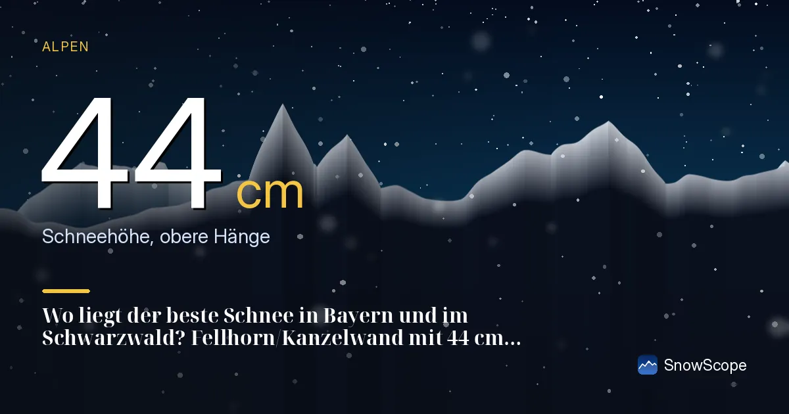

Wo liegt der beste Schnee in Bayern und im Schwarzwald? Fellhorn/Kanzelwand mit 44 cm oben (20. November)
Am Freitag, 20. November, hat Fellhorn/Kanzelwand mit 44 cm in den oberen Höhenlagen die tiefste Schneedecke in Bayern und dem Schwarzwald. Die acht Skigebiete der Region zeigen eine klare Aufteilung: Die hochalpinen Gipfel haben solide Grundlagen, während tiefere Bereiche noch mit dünner Schneedecke kämpfen.
Die Live-Schneeprognose für Fellhorn/Kanzelwand in der SnowScope-AppSchneehöhen, Pulverschnee-Alarme und 3D-Karte, gratis.
Welche Höhe zählt jetzt am meisten
Schneehöhe in der Frühjahrszeit hängt stark von der Höhe ab. Die Gipfel über 2.000 m – Zugspitze auf 2.627 m, Nebelhorn und Oberstdorf beide auf 2.213 m – haben jeweils 34 bis 43 cm. Unter 1.600 m liegt die Brauneck bei nur 3 cm. Der Unterschied ist kein Zufall; es ist die Temperatur. Höhere Lagen bleiben kalt genug, um Schnee zu halten; tiefere Hänge verlieren ihn durch Tauwetter und Regengemisch.
Fellhorn/Kanzelwand erreicht 1.965 m mit 44 cm und ist damit die beste Option, wenn du Tiefe ohne lange Anfahrt zu den höchsten Gipfeln möchtest. Das Liftsystem bringt dich schnell über die Schmelzgrenze.
| Skigebiet | Schneehöhe | Neuschnee, 72 h | Erwartet, nächste Tage | Gipfel |
|---|---|---|---|---|
| Fellhorn/Kanzelwand | 44 cm | 35 cm | 31 cm | 1.965 m |
| Zugspitze | 43 cm | 16 cm | 24 cm | 2.627 m |
| Nebelhorn | 41 cm | 29 cm | 28 cm | 2.213 m |
| Oberstdorf | 34 cm | 35 cm | 30 cm | 2.213 m |
| Garmisch-Classic | 29 cm | 14 cm | 18 cm | 2.047 m |
| Spitzingsee | 8 cm | 4 cm | 10 cm | 1.569 m |

Neuschnee: Wer hat ihn bekommen, wer nicht
In den 72 Stunden bis 20. November haben drei Skigebiete erheblichen Neuschnee abbekommen. Oberstdorf und Fellhorn/Kanzelwand erhielten je 35 cm; Nebelhorn bekam 29 cm. Die Zugspitze, trotz ihrer Höhe, bekam nur 16 cm – sie liegt in einer Regenschattentasche. Garmisch-Classic sah 14 cm, ebenfalls abgeschnitten von der Hauptschneeband.
Diese neue Schicht zählt. Sie hat Steine vergraben und Mulden auf den Pisten gefüllt. Frühjahrszeit-Skifahrer wissen, dass 30 cm Neuschnee einen kratzig-rauen Tag in einen geschmeidigen verwandeln können. Dieses Zeitfenster ist jetzt bei den top drei Skigebieten offen.
Die Vorhersage-Chance: Donnerstag bis Sonntag
Bis 23. November sind drei Schneetage vorhergesagt. Fellhorn/Kanzelwand soll 31 cm mehr bekommen, Oberstdorf 30 cm und Nebelhorn 28 cm. Das reicht aus, um die Pisten aufzufrischen und einen Puffer gegen dünne Stellen zu schaffen. Die tieferen Skigebiete bekommen weniger – 10 cm oder darunter – so wird das Tiefendefizit größer.
Das Timing spricht für Donnerstag- oder Freitag-Skifahrer. Frische Corduroy nach einem Schneefall ist im November selten; plan deine Fahrt um dieses Zeitfenster herum, wenn du kannst.
Touring und Skitour: Lese zuerst das Bulletin
Eine neue 35-cm-Schicht in den oberen Höhenlagen ist für Pulverskifahrer attraktiv. Der Schnee ist weich und griffig, besonders in steilem Gelände über 1.800 m. Aber Frühjahrszeit-Schnee ist dünn und liegt auf alten, manchmal eisbedeckten Unterlagen. Schwachschichten sind häufig.
Skitour und Abfahrten verlangen das Lawinenbulletin, einen Piepser, Schaufel und Sonde. Überprüfe die amtliche Warnung, bevor du die Piste verlässt. Viele dieser Skigebiete liegen in Mulden, wo Staublawinen und kleine Rutsche nach starkem Neuschnee möglich sind.
Die tieferen Skigebiete: Wann sie tauglich sind
Spitzingsee, Sudelfeld und Brauneck haben nur 3 bis 8 cm. Sie sind diese Woche nicht bereit für eine spezielle Skitour. Sie sind aber nützlich als Schlechtwetter-Alternative, wenn Regen in den Hochgebirgen vorhergesagt ist, oder als schnelle lokale Piste, wenn du in München oder Stuttgart lebst.
Ende November oder Anfang Dezember, wenn die Kälte hält und mehr Schnee kommt, werden sie besser. Im Moment warten sie.
Pack für die Frühjahrszeit
Bring Winterreifen oder Ketten für die letzten Kilometer zu jedem dieser Skigebiete. Bergstraßen frieren nachts zu, auch wenn das Dorf nass ist. Wachse deine Skier, bevor du losfährst – Schnee in der Frühjahrszeit ist oft hart und abrasiv, und neues Wachs macht einen echten Unterschied für deine Kante und Gleitfähigkeit.
Bring Schichten. November-Wetter wechselt schnell: Eine 20-Kilometer-Fahrt hinauf ins Tal kann die Temperatur um 10 Grad senken, und eine vorbeiziehende Wolke ändert alles.
Tipps für Skifahrer
- Ziele Fellhorn/Kanzelwand oder Nebelhorn an, wenn du Höhe und Tiefe ohne lange Anfahrt aus Nordeuropa möchtest. Beide haben 41 bis 44 cm und Lifte bis knapp 2.200 m.
- Wenn du Neuschnee jagst, gehe am Donnerstag oder Freitag nach der Vorhersage. Präparierte Pisten sind dann am weichsten.
- Winterreifen sind auf den Bergstraßen diese Woche Pflicht. Überprüfe die Straßenbedingungen vor Samstagmorgen-Fahrten.
- Skitour nur nach dem Lesen des Lawinenberichts und Mitnahme vollständiger Ausrüstung. Frühjahrszeit-Lawinenrisiko ist real.
- Wachse deine Skier am Vorabend. Frühjahrszeit-Schnee ist hart und rau; frisches Wachs spart deine Kanten und deine Oberschenkel.
Zu diesen Zahlen
Die Schneehöhen der Skigebiete sind der meiste Schnee in den oberen Hängen am angegebenen Tag; es sind Schätzungen für eine Fläche, keine Messung an einem Punkt. Prognosen können sich ändern. Lies vor dem Freeriden immer den offiziellen Lawinenlagebericht.
Diesen Bericht zitieren
Für Forschung, Lehre oder Presse: Zahlen und Grafiken sind unter CC BY 4.0 mit dieser Quellenangabe frei nutzbar.
SnowScope (2026), Wo liegt der beste Schnee in Bayern und im Schwarzwald? Fellhorn/Kanzelwand mit 44 cm oben (20. November), https://snowscope.app/blog/de/2026/11/schneehoehen-bayern-schwarzwald-20-november-2026.html, abgerufen am 2026-11-20
SnowScope (Atlas Labs). (2026, November 20). Wo liegt der beste Schnee in Bayern und im Schwarzwald? Fellhorn/Kanzelwand mit 44 cm oben (20. November). SnowScope snow reports. https://snowscope.app/blog/de/2026/11/schneehoehen-bayern-schwarzwald-20-november-2026.html
BibTeX
@misc{snowscope2026schneehoehenbayernschwar,
author = {{SnowScope (Atlas Labs)}},
title = {Wo liegt der beste Schnee in Bayern und im Schwarzwald? Fellhorn/Kanzelwand mit 44 cm oben (20. November)},
year = {2026},
month = nov,
howpublished = {\url{https://snowscope.app/blog/de/2026/11/schneehoehen-bayern-schwarzwald-20-november-2026.html}},
note = {Published 2026-11-21 12:23 UTC; accessed 2026-11-20}
}· CC BY 4.0 · Methoden, Daten und Werkzeuge →
Fellhorn/Kanzelwand: Schnee und Temperatur nach Höhe, dieser Winter vs letzter (Werkzeuge) →
Fellhorn/Kanzelwand folgen
Gratis: eine Nachricht, wenn Neuschnee kommt, und jeden Morgen die Vorhersage.
Weitere Schneeberichte

Nur Zugspitze und oberes Fellhorn halten zuverlässig 30 cm bis Mitte Dezember. Tiefere bayerische Berge sind günstiger, aber viel unsicherer. Daten vom 13. November 2026.

Zugspitze führt deutsche Skigebiete mit 53 cm am 19. November an. Die Schneedecke wächst; in der nächsten Woche sind 38 cm möglich.

Der Schnee schrumpft in Deutschland: 840 km² weniger als vor einer Woche